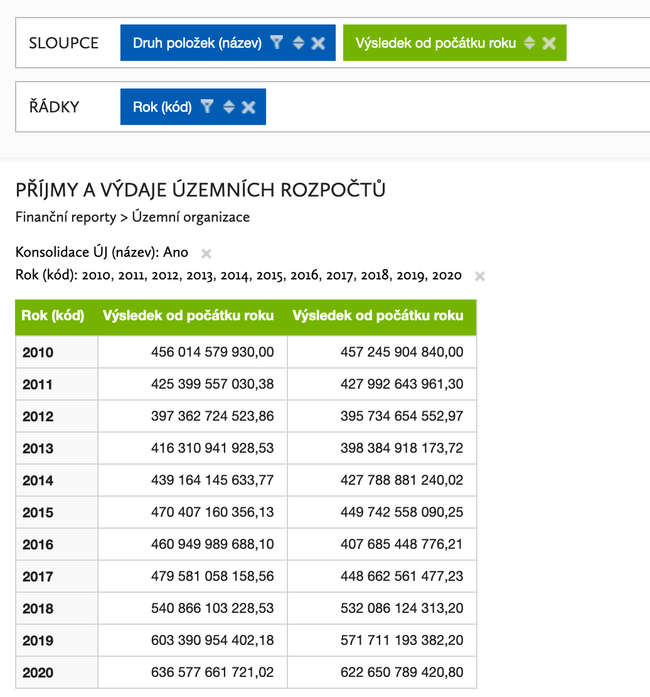

Input checks
Vstupní kontrola dat
Rozpočty
https://monitor.statnipokladna.cz/analyza/##query=uq_247a15da-aad1-4ddb-889d-6b8b76dd4a61
Příjmy a výdaje centrální
Podle Monitoru:

Z dat:
OP v tom
Příjmy a výdaje samospráv
https://monitor.statnipokladna.cz/analyza/##query=uq_5fb642ff-31a3-4640-9d29-2fbdb2d0bb72
